| GROUNDNUT (Arachis hypogaea ) |
|
I. SEASON AND VARIETIES
DISTRICT / SEASON VARIETIES
| District/Season | Sowing Month | Varieties |
| Coimbatore, Thiruppur | ||
| Chithiraipattam | April-May | TMV 7, CO 3, COGn 4, VRI 2, VRI 3,TMVGn 13 |
| Erode,Theni,Dindigul | ||
| Margazhipattam | Dec- Jan | TMV 7, CO 3, COGn 4, VRI 2, VRI 3, ALR 3, VRIGn5, VRIGn 6, TMVGn 13 |
| Coimbatore,Thiruppur, Erode, Theni, Dindigul | ||
| Anippattam | June- July | TMV 7, VRI 2, VRIGn 5, VRI Gn 6,TMVGn 13 |
| Ramanathapuram, Thirunelveli | ||
| Thaippattam | Jan- Feb | TMV 7, CO 3, COGn 4, VRI 2, VRI 3, ALR 3, VRIGn5,VRIGn 6, TMVGn 13 |
| Karur, Pudukkottai, Madurai, Virudhunagar | ||
| Margazhipattam | Dec- Jan | TMV 7, CO 3, COGn 4, VRI 2, VRI 3, ALR 3, VRIGn5, VRIGn 6, TMVGn 13 |
| Sivagangai | ||
| Ayppasipattam | Oct- Nov | TMV 7, CO 3, COGn 4, VRI 2, VRI 3, ALR 3, VRIGn5, VRIGn 6, TMVGn 13 |
| Karur, Pudukkottai, Madurai, Sivagangai | ||
| Anippattam | June-July | TMV 7, VRI 2, VRIGn 5, VRI Gn 6,TMVGn 13 |
| Virudhunagar | ||
| Adippattam | July-Aug | TMV 7, VRI 2, VRIGn 6,TMVGn 13 |
| Ramanathapuram, Thirunelveli | ||
| Purattasipattam | Sep- Oct | TMV 7, VRI 2, VRIGn 6,TMVGn 13 |
| Thoothukudi | ||
| Karthigaipattam | Nov- Dec | TMV 7, VRI 2, VRIGn 6,TMVGn 13 |
| Villupuram | ||
| Chithiraipattam | April-May | TMV 7, CO 3, COGn 4, VRI 2, VRI 3,TMVGn 13 |
| Thiruvallur, Kancheepuram | ||
| Margazhipattam | Dec- Jan | TMV 7, CO 3, COGn 4, VRI 2, VRI 3, ALR 3, VRIGn5, VRIGn 6, TMVGn 13 |
| Cuddalore | ||
| Ayppasipattam | Oct- Nov | TMV 7, CO 3, COGn 4, VRI 2, VRI 3, ALR 3, VRIGn5, VRIGn 6, TMVGn 13 |
| Vellore, Thiruvannamalai | ||
| Karthigaipattam | Nov- Dec | TMV 7, CO 3, COGn 4, VRI 2, VRI 3, ALR 3, VRIGn5, VRIGn 6, TMVGn 13 |
| Thiruvallur, Cuddalore, Vellore | ||
| Anippattam | June-July | TMV 7, VRI 2, VRIGn 5, VRI Gn 6,TMVGn 13 |
| Kancheepuram | ||
| Adippattam | July-Aug | TMV 7, VRI 2, VRIGn 6,TMVGn 13 |
| Thiruvannamalai | ||
| Purattasipattam | Sep- Oct | TMV 7, VRI 2, VRIGn 6,TMVGn 13 |
| Villupuram | ||
| Karthigaipattam | Nov- Dec | TMV 7, VRI 2, VRIGn 6,TMVGn 13 |
| Perambalur, Ariyalur | ||
| Margazhipattam | Dec- Jan | TMV 7, CO 3, COGn 4, VRI 2, VRI 3, ALR 3, VRIGn5, VRIGn 6, TMVGn 13 |
| Namakkal, Dharmapuri | ||
| Vaigasipattam | May- June | TMV 10, COGn 5, TNAU CO 6, VRIGn 7, |
| Salem, Krishnagiri | ||
| Karthigaipattam | Nov- Dec | TMV 7, CO 3, COGn 4, VRI 2, VRI 3, ALR 3, VRIGn5, VRIGn 6, TMVGn 13 |
| Namakkal | ||
| Vaigasipattam | May- June | TMV 10, COGn 5, TNAU CO 6, VRIGn 7, |
| Salem, Dharmapuri, Krishnagiri | ||
| Anippattam | June-July | TMV 7, VRI 2, VRIGn 5, VRI Gn 6,TMVGn 13 |
| Perambalur, Ariyalur | ||
| Adippattam | July-Aug | TMV 7, VRI 2, VRIGn 6,TMVGn 13 |
| Thiruchirapalli, Thanjavur, Thiruvarur, Nagapattinam | ||
| Margazhipattam | Dec- Jan | TMV 7, CO 3, COGn 4, VRI 2, VRI 3, ALR 3, VRIGn5, VRIGn 6, TMVGn 13 |
| Thiruchirapalli | ||
| Anippattam | June-July | TMV 7, VRI 2, VRIGn 5, VRI Gn 6,TMVGn 13 |
| Thanjavur, Nagapattinam | ||
| Margazhipattam | Dec- Jan | TMV 7, CO 3, COGn 4, VRI 2, VRI 3, ALR 3, VRIGn5, VRIGn 6, TMVGn 13 |
II. DESCRIPTION OF GROUNDNUT VARIETIES
| Particulars | TMV 7 | TMV 10 | TMVGn 13 | CO 3 | COGn 4 |
| Parentage | Pureline selection from Tennessee white | Spontaneous mutant from Argentina | Selection from Pollachi red | Derivative of VG 55 X JL 24 | Derivative of TMV 10 X ICGV 82 |
| Duration (days) | 100-105 | 120-130 | 100-105 | 115-120 | 115-120 |
| Average Yield of | |||||
| Pods kg/ha | |||||
| Rainfed | 1100 | 1700 | 1613 | 1750 | 1500 |
| Irrigated | 1900 | - | 2580 | 2150 | 1950 |
| Shelling % | 74 | 77 | 71.4 | 70 | 70 |
| 100-seed weight (g) | 36 | 43 | 44 | 65 | 60 |
| Oil content % | 49.6 | 54.4 | 50 | 49.2 | 52.7 |
| Particulars | COGn 5 | TNAU CO 6 | ALR 3 | VRI 2 | VRI 3 |
| Parentage | Multiple cross derivative | Derivative of CS 9 X ICGS 5 | Derivative of (R33-1 X ICGV 68) X (NCAC 17090 X ALR 1) | Derivative of JL 24 X CO 2 | Derivative of J11 X R 33-1 |
| Duration (days) | 125-130 | 125-130 | 110-115 | 100-105 | 90 |
| Average Yield of Pods kg/ha | |||||
| Rainfed | 1585 | 1914 | 2095 | 1790 | 1670 |
| Irrigated | - | - | 2720 | 2060 | 1830 |
| Shelling % | 70 | 73.5 | 69 | 74.8 | 73 |
| 100-seed weight (g) | 47 | 48.5 | 46 | 49.0 | 35 |
| Oil content % | 51 | 49.5 | 50 | 48 | 48 |
| Special features | Dark green foliage, tolerant to foliar diseases | Dark green foliage, tolerant to foliar diseases | Suitable for rainfed,rust resistant, tolerant to late leaf spot | Suitable for Irrigation | Early and suitable for intercropping |
| Growth habit | Semi- spreading | Semi- spreading | Bunch | Bunch | Bunch |
| Leaf colour | Dark green | Dark green | Dark green | Ashy green | Light green |
| Seed colour | Red testa | Tan testa | Rose | Light rose | Light rose |
| Particulars | VRIGn 5 | VRIGn 6 | VRIGn 7 |
| Parentage | Derivative of CG 26 X ICGS 44 | Derivative of ALR 2 X VG 9513 | Derivative of TMV 1 X JL 24 |
| Duration (days) | 105-110 | 120-125 | 120-125 |
| Average Yield of Pods kg/ha | |||
| Rainfed | 2133 | 1916 | 1865 |
| Irrigated | 2384 | 2403 | - |
| Shelling % | 75 | 75 | 72 |
| 100-seed weight (g) | 46 | 36 | 46 |
| Oil content % | 51 | 50 | 48 |
| Special features | High reproductive efficiency. Dormancy 45 days | Small pods, moderately resistant to late leaf spot, rust and PBND diseases. Resistant to early season drought, high harvest index (34.6%) | Moderately resistant to late leaf spot and rust diseases. Moderately resistant to leaf miner |
| Growth habit | Bunch | Bunch | Semi-spreading |
| Leaf colour | Dark green | Light green | Dark green |
| Seed colour | Red testa | Light Rose | Rose |
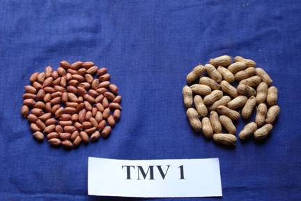
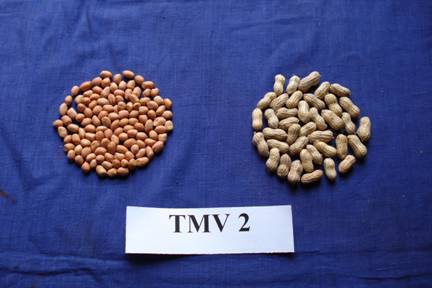
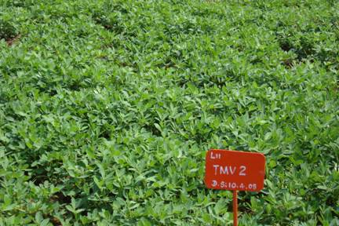 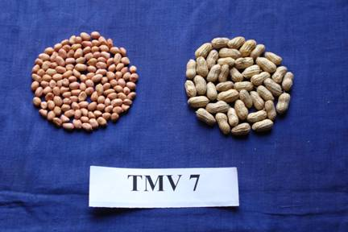
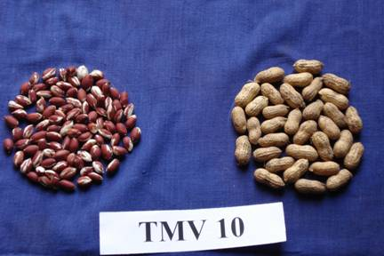 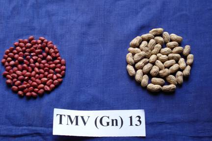
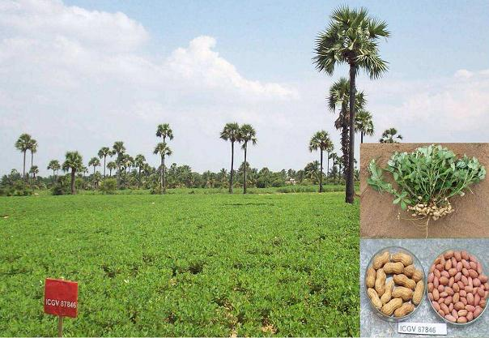
FIELD PREPARATION
2. APPLICATION OF FERTILIZERS
Apply NPK fertilizers as per soil test recommendation. If soil test is not done, follow the blanket recommendation.
| N | P | K | Sulphur sludge |
| 25 | 50 | 75 kg/ha | 60 kg/ha |
N and K in three splits viz., 50 % N & K as basal + 25 % N and K at 20 DAS + 25 % N and K at 45 DAS is recommended.
3. FORMING BEDS
4. POLYTHENE FILM MULCHING
Broad beds and furrows method of groundnut cultivation is a proven technology from ICRISAT. Considering the favourable environment in the Broad beds and furrows system for the development of groundnut pods, with a little modification in the size, beds are to be formed for the polyethylene film mulched groundnut. Make the beds at a width of 60 cm, leaving 15 cm on the either side for the furrows. In a plot size of 4.5 m x 6.0 m, five beds can be made. After the formation of the bed and fertilizer application, spread black polythene sheet (90 cm width) over the soil surface. The edges of the polyethylene can be sheet Seven micron polythene film sheet @50 kg/ha is required. Holes can be made at required spacing of 30 x10 cm before spreading of the sheets. The seed requirement is similar to normal groundnut cultivation
| 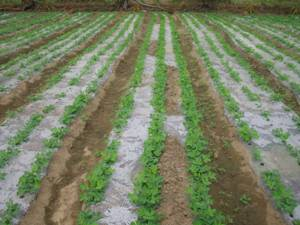 | 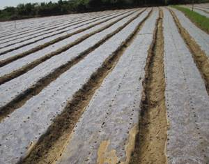 |
| Polyethylene film mulch for irrigated groundnut | |
5. APPLICATION OF MICRONUTRIENTS
6. NUTRITIONAL DISORDER
Zinc deficiency:
Iron deficiency : spray 1% FeSO4 on 30, 40 and 50 days after sowing.
Boron deficiency: Apply Borax 10 kg + Gypsum 200 kg/ha at 45th day after sowing.
7. SEED RATE
Use 125 kg/ha of kernels. Increase the seed rate by 15% in the case of bold seeded varieties.
8. SPACING
Adopt a spacing of 30 cm between rows and 10 cm between plants. Wherever groundnut ring mosaic (bud necrosis) is prevalent, adopt a spacing of 15cm x 15 cm.
9. SEED TREATMENT
Seed treatment will protect the young seedlings from root-rot and collar rot infection.
10. SOWING
11. WEED MANAGEMENT
| 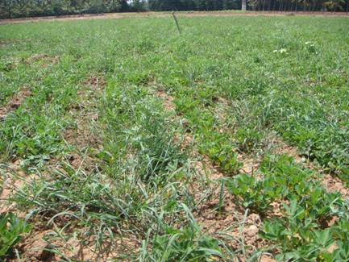 Unweeded groundnut field |
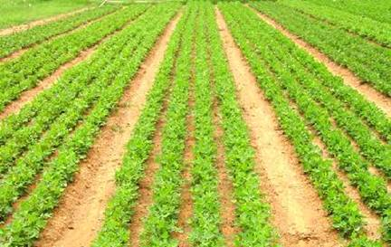 Weed free groundnut field |
12. EARTHING UP:
Accomplish earthing up during second hand weeding/late hand weeding (in erbicide application).
It is an important operation in groundnut. Earthing up is to be done within 40-45 days after sowing as it helps for the penetration of pegs in the soil and also facilitates for increased pod development.
NOTE:
13. APPLICATION OF CALCIUM SULPHATE (GYPSUM)
NOTE: Application of gypsum encourages pod formation and better filling up of the pods.
Application of gypsum at the rate of 50 % basal both in rainfed and irrigated condition reduces Khadhasty malady and pod scab nematode
Combined nutrient spray
Pod filling is a major problem especially in the bold seed varieties. To improve pod filling spraying of nutrient solution is to be given. This can be prepared by soaking DAP 2.5 kg, Ammonium sulphate 1 kg and borax 0.5 kg in 37 lit of water overnight. The next day morning it can be filtered and about 32 litre of mixture can be obtained and it may be diluted with 468 lit of water so as to made up to 500 litre to spray for one ha. Plano fix at the rate of 350 ml. can also be mixed while spraying. This can be sprayed on 25th and 35th day after sowing or Spray TNAU Groundnut rich @ 5.5 kg/ha for 2 sprays at 35 (50 per cent flowering) and 45 DAS Pod developing stage).
14. WATER MANAGEMENT
Schedule the irrigation at 0.40 and 0.60 IW/CPE ratio during vegetative and reproductive phases respectively. Regulate irrigation according to the following growth phase of the crop.
Pre-flowering phase : 1 to 25 days
Flowering phase : 26 to 60 days
Maturity phase : 61 to 105 days
Regulate irrigation based on physiological growth phases. Pegging, flowering and pod development phases are critical for irrigation during which period adequate soil moisture is essential. Apply irrigation as follows:
In pod development stage, 2 - 3 irrigations depending on the soil type
Note: Spraying 0.5% Potassium chloride during flowering and pod development stages will aid to mitigate the ill effects of water stress. Sprinkler irrigation will save water to the tune of about 30%. Borderstrip irrigation is recommended in command areas in light textured soils. Composted coir pith increases moisture availability and better drainage in heavy textured soil.
15. HARVESTING
NOTE: Do not keep the pulled out plants in heaps when they are wet, especially the bunch varieties, as the pods will start sprouting.
| 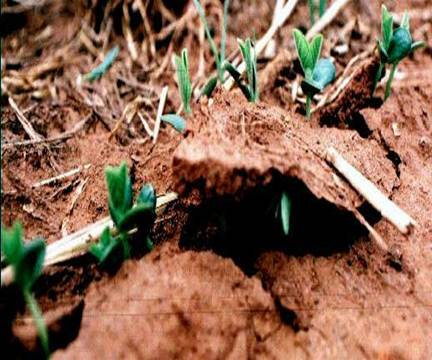 Seedling emerge at 5-10 days |
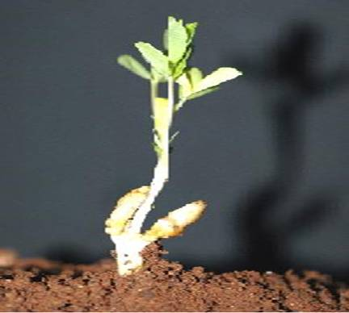 Seedling emergence stage |
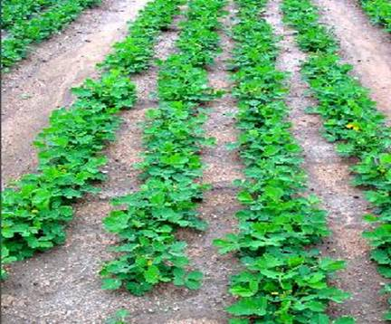 Flowering stage |
| 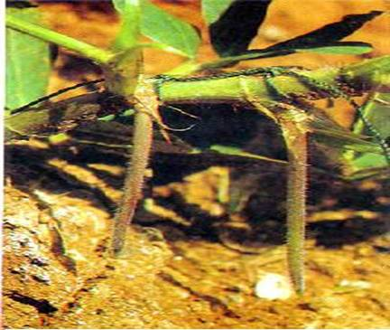 Pegging stage |
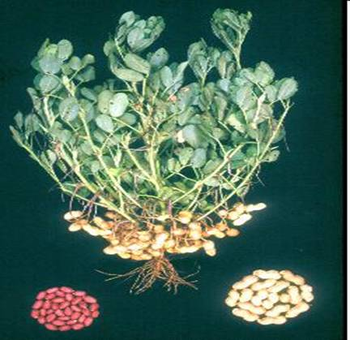 Maturity stage |
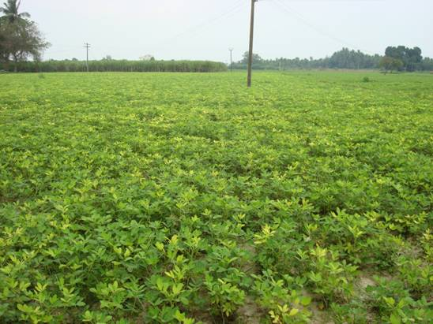 |
CROP PHYSIOLOGY
Foliar spray of TNAU Groundnut Rich @ 2 kg/acre in 200 litres of water at peak flowering and at pod development stages increases flower retention, pod filling and improves moisture stress tolerance and pod yield.
GROUNDNUT (Arachis hypogaea )
CROP MANAGEMENT
I. Rainfed
1. FIELD PREPARATION
i) Plough with tractor using a disc followed by harrow, once or twice with iron plough or
3 - 4 times with country plough till all the clods are broken and a fine tilth is obtained.
ii) Chiselling for soils with hard pan: Chisel the soils having hard pan formation at shallow depth with chisel plough first at 0.5 m interval in one direction and then in the direction perpendicular to the previous one, once in three years. Apply 12.5 t/ha of FYM or composted coir pith besides chiselling.
2. APPLICATION OF FERTILIZERS
Apply NPK fertilizers as per soil test recommendation. If soil test is not done, follow the blanket recommendation.
| N | P | K |
| 10 | 10 | 45 kg/ha |
3. FORMING BEDS
4. APPLICATION OF MICRONUTRIENTS
Mix 12.5 kg/ha of micronutrient mixture developed by Department of Agriculture with enough dry sand to make a total quantity of 50 kg/ha. Broadcast evenly on the soil surface immediately after sowing. Do not incorporate micronutrient mixture in to the soil.
5. NUTRITIONAL DISORDER
Zinc deficiency:
Iron deficiency: spray 1% FeSo4 on 30, 40 and 50 days after sowing.
Boron deficiency: Apply Borax 10 kg + Gypsum 400 kg/ha at 45th day after sowing.
6. SEED RATE
Use 120 kg/ha of kernels, 175 kg/ha of kernels for bold seeded varieties.
7. SPACING
Adopt a spacing of 30 cm between rows and 10 cm between plants. Wherever groundnut ring mosaic (bud necrosis) is prevalent, adopt a spacing of 15cm x 15 cm.
8. SEED TREATMENT
9. SOWING
10. INTERCROPPING
11. WEED MANAGEMENT
12. EARTHING UP
Accomplish earthing up during second hand weeding/late hand weeding (in herbicide application).
NOTE: i) Earthing up provides medium for the peg development ii) Use the improved hoe with long handle which can be worked more efficiently in a standing position. iii) Do not disturb the soil after 45th day of sowing as it will affect pod formation adversely.
13. APPLICATION OF CALCIUM SULPHATE (GYPSUM)
NOTE: Application of gypsum encourages pod formation and better filling up of the pods.
Application of gypsum at the rate of 50 % basal both in rainfed and irrigated condition reduces Khadhasty malady and pod scab nematode
Combined nutrient spray
Pod filling is a major problem especially in the bold seed varieties. To improve pod filling spraying of nutrient solution is to be given. This can be prepared by soaking DAP 2.5 kg, Ammonium sulphate 1 kg and borax 0.5 kg in 37 lit of water overnight. The next day morning it can be filtered and about 32 litre of mixture can be obtained and it may be diluted with 468 lit of water so as to made up to 500 litre to spray for one ha. Plano fix at the rate of 350 ml. can also be mixed while spraying. This can be sprayed on 25th and 35th day after sowing.
14. HARVESTING
NOTE: Do not keep the pulled out plants in heaps when they are wet, especially the bunch varieties, as the pods will start sprouting.